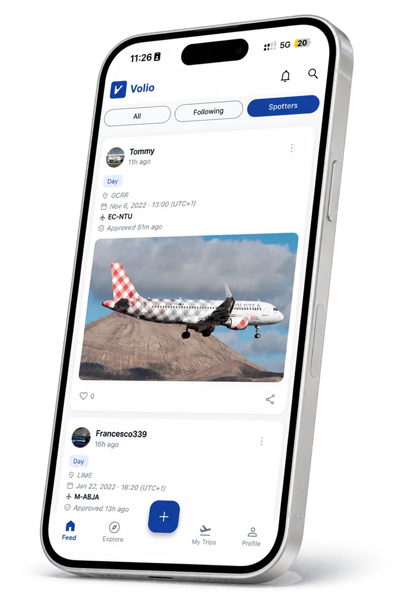
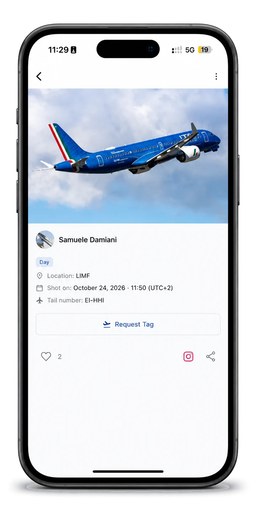

Volio has a feed of its own for the people on the other side of the fence. Post the shot, link it to the registration and the aircraft, and it lands where other spotters are actually looking. Now your photos can also reach the pilot who was flying.
Read the photo guidelines →
Separate from the flight feed, so photography does not compete with flight posts and neither one gets watered down.
The spotter feed is a stream of aircraft photography from the whole community. Scroll what people caught today, react to it, and follow the spotters whose eye you like.
A photo on its own is a photo. A photo with a registration on it becomes part of that aircraft's record. When you post, you attach the tail number and the aircraft, and the shot connects to everything else on Volio about that airframe.

Catch it on approach, on the ramp, or on the roll. Whatever you shoot it on, the photo starts on your phone.
Open Volio, pick the photo, and write what you want to say about it. A location and a few words are enough.
Attach the registration and the aircraft type so the shot is tied to the actual airframe you photographed.
Every submission is checked by a human before it goes live. Once it clears, it is on the spotter feed and on your profile.
Every spotter photo is looked at by a person before it appears. It keeps the feed worth scrolling, and it keeps out what does not belong there.
Submissions start as pending. A person checks each one against the photo guidelines and approves or declines it, so the feed is curated rather than automatic.
If a shot is declined you are told, with a reason where there is one to give, so you know what to do differently next time.
You choose what you post and you can take it down. Volio is where your photography is seen, not where it disappears.
The photo guidelines show what passes review: framing, horizon, exposure and editing, with examples of good and bad shots.
You caught the aircraft. Someone was flying it. Volio now connects the two: spotter photos are matched to the pilot at the controls by flight time, location and registration. The pilot gets a notification, and approved photos appear on their profile and in the Volio feed.
Found a shot of your flight that a spotter had already uploaded? Send a tag request on that photo, straight from the app.
Tag requests come to you. Review each one and accept it when it is the right pilot on the right flight.
A few of the shots the community has posted lately. Open the app for the full feed.
No. The spotter feed is for anyone photographing aircraft. You do not need to have been on board, and you do not need a licence or a flight to post.
No, it is the same Volio account. If you both fly and shoot, your flights and your photography live under one profile.
Read the photo submission guidelines. They cover framing, horizon, exposure and editing, with examples of shots that pass and shots that do not.
Submissions are reviewed as they come in. You will see the shot go live once it is approved, and you are notified if it is not.
It compares the time and place of the photo and the registration you tagged with the flights pilots have on Volio. When they line up, the pilot is notified and can review the photo.
No. You receive a notification first, and a photo only appears on your profile and in the Volio feed once you approve it.
Yes. A pilot can send a tag request on one of your photos. You review the request and decide whether to accept it.
The photo is linked to that airframe and to its aircraft type, so it sits alongside the rest of what Volio holds about the aircraft rather than floating on its own. It is also what lets Volio match the shot to the pilot who was flying.
Yes. Photos on a flight post and photos on the spotter feed are two different things, and you can do both. See what a flight card holds.
Volio is free to download. Post your first shot, tag the tail, and put it in front of people who can name the type from the sound, and of the pilot who was flying it.